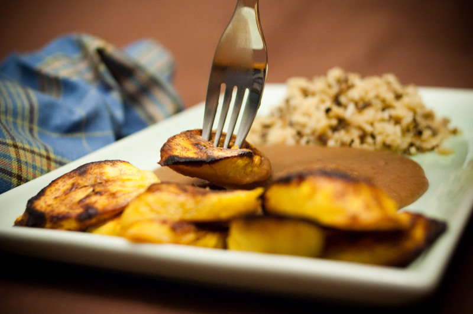

Ingredients:
3 cups or more cooked pinto beans
1/2 sliced onion
1/2 bell pepper, diced
2 tablespoons grape seed oil
salt and pepper
3 ripe plantains (they should be brown on the outside)
2 tablespoons grape seed oil
Directions:
Beans:
- Heat the oil and sauté the onions and bell pepper on medium heat until they start to brown and caramelize. You will cook the beans in the
same pan.
- Blend the onions and bell pepper with the beans until smooth. Turn off the heat to prevent the oil and pan from burning.
- Pour back in the same pan and cook for about 10 minutes on medium-low heat.
Plantains:
- Preheat the oven to 425.
- Slice the plantains diagonally into 1/4 inch slices and brush with oil.
- Place them on a baking sheet and bake for 30 minutes.